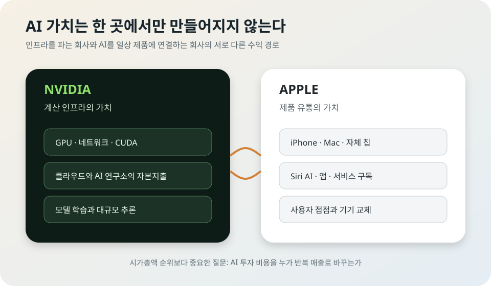

Apple이 Nvidia를 장중 추월했다: AI 시장이 인프라 다음을 보기 시작했다
7월 17일 Apple은 장중 한때 Nvidia를 제치고 세계에서 가장 가치 있는 상장사가 됐다. 그러나 장 마감 때는 Nvidia가 다시 근소하게 앞섰다. 하루의 1위가 누구였는지보다 더 중요한 변화가 있다. 투자자들이 AI 가치를 GPU 판매와 데이터센터 건설만으로 계산하지 않고, 이미 수십억 대의 기기와 유료 서비스에 AI를 연결할 수 있는 회사까지 다시 평가하기 시작했다는 점이다.
Market Signal
Apple의 장중 1위와 Nvidia의 종가 1위는 서로 모순되지 않는다
Reuters는 거래 중 Apple이 Nvidia를 넘어섰다고 보도했고, AP는 Nvidia가 장중 1위를 내줬다가 마감 때 Apple 위로 복귀했다고 정리했다. 시가총액은 주가에 따라 초 단위로 바뀌기 때문에 두 보도는 시점이 다를 뿐이다. 중요한 것은 일시적인 순위 선언보다 접전이 보여준 투자 논리의 변화다.

그날 시장에서 실제로 일어난 일
Reuters는 Apple 주가 상승으로 회사 가치가 장중 Nvidia를 넘어섰다고 전했다. 보도 시점에는 Apple이 세계 최대 상장사 자리를 되찾은 것으로 계산됐다. 같은 날 Nvidia를 비롯한 반도체주는 중국 Moonshot AI의 Kimi K3 공개와 AI 투자 회수 우려가 겹치며 압박을 받았다.
AP의 마감 보도에서는 Nvidia가 2.2% 하락했지만 장 후반 일부 낙폭을 회복해 Apple보다 다시 높은 시가총액으로 거래를 끝냈다. 따라서 “Apple이 영구적으로 Nvidia를 제쳤다”는 설명은 틀리고, “장중 순위가 뒤집힐 정도로 두 회사 가치가 가까워졌다”가 정확하다.
시장 순위는 상징적이지만 회사의 실제 매출이나 현금이 하루 만에 바뀐 것은 아니다. 다만 수조 달러 규모의 자금이 어느 사업 모델에 더 높은 기대를 주는지 보여주는 온도계다. 불과 몇 달 전까지만 해도 Nvidia의 AI 인프라 독주가 압도적이었는데, 이제 Apple의 저자본·고유통 모델이 비교 대상으로 돌아왔다.
Nvidia가 만든 AI 투자 공식
Nvidia의 강점은 분명하다. 대형 언어모델 학습과 추론에 쓰이는 GPU, 고속 네트워크, CUDA 소프트웨어를 한 생태계로 묶었다. 클라우드 회사와 AI 연구소가 데이터센터를 늘릴수록 Nvidia의 칩과 시스템 수요가 커지는 구조다. AI 투자의 첫 단계에서 가장 직접적으로 돈을 번 회사다.
그러나 이 구조는 고객의 자본지출에 민감하다. Meta, Microsoft, Amazon, Alphabet이 서버 투자를 계속 늘려야 Nvidia의 높은 성장률도 유지된다. AI 서비스 매출이 데이터센터 비용을 충분히 따라오지 못한다는 의심이 커지면, 시장은 GPU 주문이 언젠가 둔화될 가능성을 먼저 가격에 반영한다.
Kimi K3 같은 강력한 공개 모델이 시장을 흔든 이유도 같다. 모델 한 개가 Nvidia 수요를 없애지는 않는다. 오히려 거대 모델을 운영하려면 많은 컴퓨트가 필요하다. 다만 더 효율적인 모델과 다양한 칩이 등장하면 “모든 AI 가치가 가장 비싼 GPU에 집중된다”는 단순한 투자 공식은 약해질 수 있다.
Apple이 보여주는 다른 AI 수익 모델
Apple은 하이퍼스케일 데이터센터 투자 경쟁에서 상대적으로 조용했다. 이 점은 한동안 AI 경쟁에서 뒤처졌다는 평가의 근거였다. 하지만 시장이 투자 회수와 현금흐름을 더 따지기 시작하면, 적은 자본으로 외부 모델과 자체 칩을 조합하고 기기 판매에 AI 기능을 얹는 방식이 장점으로 보일 수 있다.
Apple의 핵심 자산은 모델 하나가 아니라 설치 기반이다. iPhone, iPad, Mac, Watch, Vision Pro와 서비스 계정을 이미 보유한 사용자가 많다. AI 기능이 기기 교체, 저장공간 요금제, 앱 구독, 검색·광고 계약에 조금씩 기여해도 전체 금액은 커질 수 있다.
2026년 Apple은 Siri AI와 차세대 Apple Intelligence를 다시 전면에 세웠다. 성공 여부는 벤치마크 1위보다 사용자가 매일 쓰는 메시지, 일정, 사진, 검색, 앱 동작에 AI가 얼마나 자연스럽게 들어가는지에 달렸다. Apple은 모델 성능보다 유통과 통합에서 이기려는 회사다.
물론 이 전략에도 약점은 있다. 외부 모델과 클라우드 파트너에 의존하면 비용과 품질을 완전히 통제하기 어렵다. 중국에서는 Alibaba와 Baidu를 붙여야 하고, 다른 지역에서는 개인정보 보호와 규제 조건에 맞춰 시스템을 나눠야 한다. AI 기능이 기대에 못 미치면 기기 교체 수요도 제한적일 수 있다.
“칩에서 제품으로 이동했다”는 말의 정확한 의미
이번 접전이 반도체 시대의 끝을 뜻하지는 않는다. AI 서비스가 성장할수록 GPU, HBM, 네트워크, 전력 수요도 함께 커진다. 다만 투자자의 질문이 공급 측 하나에서 수요 측까지 넓어졌다. “누가 칩을 공급하는가”에 더해 “누가 그 칩으로 만든 AI를 돈 내는 사용자에게 전달하는가”를 보기 시작한 것이다.
이 변화는 기업별 평가를 더 까다롭게 만든다. Nvidia는 높은 성장률을 유지하려면 고객의 AI 자본지출이 계속 정당화돼야 한다. Apple은 막대한 기기 기반을 실제 AI 매출과 사용자 만족으로 연결해야 한다. 두 회사 모두 다른 방식의 실행 위험을 안고 있다.
그래서 순위 경쟁을 승자와 패자의 이야기로만 보면 핵심을 놓친다. AI 산업의 가치 사슬이 칩, 메모리, 데이터센터, 모델, 앱, 기기, 구독으로 넓어지면서 각 단계의 이익이 어떻게 나뉠지 시장이 다시 계산하는 과정에 가깝다.
한국 반도체와 전자산업이 볼 부분
한국 기업에는 두 회사 모두 중요하다. Nvidia의 데이터센터 GPU가 늘면 HBM과 서버 메모리 수요가 커지고, Apple의 온디바이스 AI가 확대되면 모바일 메모리, 디스플레이, 카메라, 패키징, 고성능 모바일 칩 수요가 달라질 수 있다. 어느 한쪽의 승리가 한국 공급망 전체의 승패를 바로 결정하지 않는다.
오히려 봐야 할 것은 지출의 이동이다. 데이터센터 투자 증가율이 둔화하고 소비자 AI 기기 교체가 빨라지면 수혜 품목이 서버에서 모바일로 일부 이동할 수 있다. 반대로 Apple AI가 기대만큼 기기 판매를 자극하지 못하면 인프라 쪽이 계속 더 큰 시장으로 남는다.
개인 투자자에게도 하루의 시가총액 순위는 매수 신호가 아니다. 장중과 종가가 다르고, 주가는 실적 발표와 금리, 지정학, 옵션 거래에 따라 크게 움직인다. 이번 사건은 투자 추천보다 AI 가치가 어디에서 만들어지는지 살펴보는 산업 자료로 읽는 편이 낫다.
앞으로 확인할 지표
Nvidia에서는 하이퍼스케일러의 자본지출, 차세대 GPU 공급 일정, 데이터센터 매출 성장률, 고객 다변화를 봐야 한다. Apple에서는 Siri AI 실제 사용률, AI 기능이 지원되는 기기 범위, 서비스 매출, iPhone 교체 주기 변화를 확인해야 한다.
두 회사의 시가총액이 다시 뒤집히는 것은 언제든 가능하다. 더 의미 있는 판단은 1위 자리가 아니라 인프라 지출이 실제 AI 매출로 전환되는 속도와, 소비자가 AI 기능에 추가 비용을 낼 의사가 있는지를 함께 보는 것이다.
내가 보는 핵심
이번 접전은 AI 열풍이 끝났다는 신호가 아니라, 열풍의 두 번째 단계가 시작됐다는 신호에 가깝다. 첫 단계에서는 GPU와 데이터센터를 확보한 회사가 높은 평가를 받았다. 이제는 그 인프라에서 나온 AI를 일상 제품과 서비스에 넣어 반복 매출을 만드는 회사도 같은 무게로 평가받기 시작했다.
Nvidia와 Apple 중 누가 며칠 더 1위를 지키느냐보다 중요한 질문은 하나다. AI에 들어간 엄청난 비용을 누가 가장 안정적인 현금흐름으로 바꿀 것인가. 앞으로의 시장 순위는 그 답이 나올 때마다 계속 흔들릴 것이다.
출처와 더 읽을 자료
- Reuters: Apple unseats Nvidia as AI bets shift
- AP: Nvidia briefly cedes No. 1 ranking and finishes above Apple
- Wall Street Journal: Apple and Nvidia market-value race
- Al Jazeera/Reuters: Apple regains top spot during trading
- Barron's: semiconductor sell-off context
- Apple 공식: 차세대 Apple Intelligence와 Siri AI
Comments
댓글